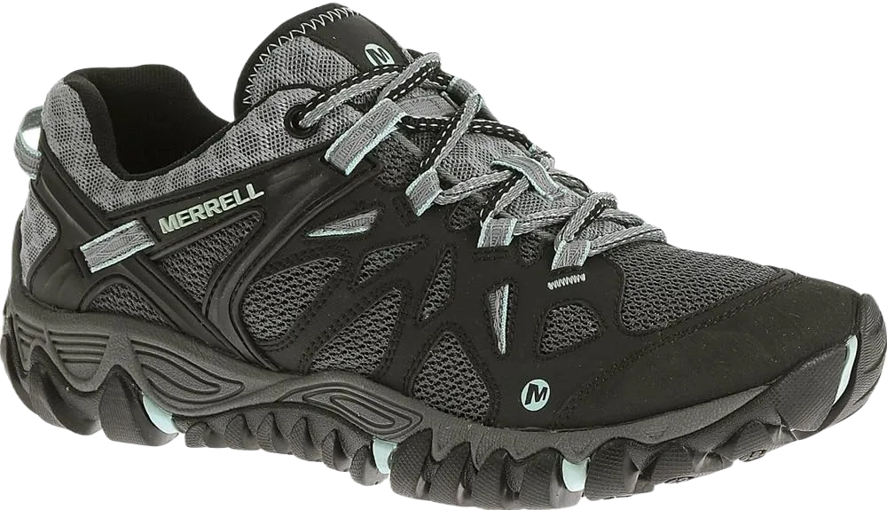

8 Best Shoes for Mud Run Buyer’s Guide 2024
When discussing the best shoes for a mud run, it’s essential to consider various features and necessities, and Step Aerobics shoes excel in providing exceptional comfort. Many people struggle with footwear that doesn't offer adequate support, but these shoes are designed to ensure that you feel great while participating in events like mud runs. They provide the comfort and support needed for optimal performance, helping you achieve better results.
Mud run shoes are specifically crafted to offer superior support and protection from the elements. They are designed to keep debris out and enhance your overall experience. With features that prevent slipping and provide excellent traction, these shoes help you maintain a secure grip on slippery surfaces, making them ideal for muddy terrain. Their waterproof capabilities further enhance their functionality, ensuring they are a reliable choice for any mud run challenge.
-
#1
Salomon speed cross 4
When it comes to shoes that offer security and keep unwanted elements at bay, there are several options designed for enhanced comfort. These shoes not only provide a protective barrier but also allow for flexibility, making them an excellent choice for various activities. They incorporate hiking-friendly features that highlight their suitability for outdoor enthusiasts and demonstrate their effectiveness for anyone seeking reliable footwear.
Many shoes on the market prioritize security and space, ensuring a comfortable fit while addressing issues like perspiration. This focus on design helps alleviate discomfort and promotes overall foot health, making them beneficial for those who spend long hours on their feet.
For individuals dealing with sore feet, the right shoes can deliver exceptional comfort while helping to eliminate negative factors that can affect foot health. These shoes often come with easy-to-clean surfaces and practical accessibility features, making them ideal for various environments -
#2
Inov-8 Terraclaw 250
.webp)
These shoes are designed with features and abilities that make them an excellent choice for anyone seeking comfort. Many people appreciate the lightweight nature of these shoes, which also effectively repel water, keeping feet dry during various activities.
Breathability is another key aspect, as these shoes incorporate a technical support system to enhance comfort and ensure a pleasant wearing experience. With a wide range of options available, these shoes are tailored to meet the needs of users, providing the protection and support necessary for various environments. Their thoughtful design allows for excellent performance, helping you achieve optimal results.
In addition to their functionality, these shoes are reasonably priced, offering great quality for the investment. They provide essential security and durability, making them a reliable choice for everyday wear. -
#3
Salomon xa pro 3d gtx

When it comes to shoes, there are many options available that effectively keep unwanted elements at bay. People have a strong affinity for various activities, and the right footwear plays a crucial role in enhancing their experiences. With a focus on durability and breathability, these shoes are designed to meet the needs of wearers who prioritize both comfort and functionality.
Certain shoes excel at providing protection and keeping external factors away, ensuring you achieve optimal results in your activities. These lightweight options offer exceptional comfort, making them ideal for a range of pursuits. Understanding the diverse interests of people, we create shoes that reflect our commitment to quality and support.
Additionally, these shoes feature waterproof capabilities that offer extra comfort and protection for everyone. Their slip-resistant design enhances safety, making them reliable for various environments. With excellent traction, these shoes are not only functional but also provide the assurance needed for those who lead active lifestyles. -
#4
Icebug acceleritas 6

There are numerous types of shoes designed to keep unwanted elements at bay. Many people engage in various activities, and these shoes provide the necessary protection while ensuring comfort. Their lightweight design enhances usability, allowing wearers to enjoy their pursuits without feeling weighed down. With a range of options available, you can find the perfect fit to maintain your comfort and performance.
Choosing the right shoes can significantly improve your condition and provide added security and speed. These shoes feature water-resistant properties and slip-resistant soles, making them reliable for tackling a variety of challenges. Many individuals appreciate the comfort and supportive features that make these shoes a popular choice for everyday wear.
These shoes offer a variety of capabilities and features that cater to your needs. Whether you're standing all day or engaging in other activities, the right footwear can provide the extra care necessary for your feet. Designed to address specific concerns, these shoes help keep unwanted elements away while ensuring you feel comfortable and supported throughout your day. -
#5
Reebok all terrain super
.webp)
People often seek out products that enhance their well-being, and the right footwear can play a significant role in this. Many individuals have a strong affinity for shoes that not only provide comfort but also feature the ability to keep unwanted elements at bay. With slip-resistant properties, these shoes are designed to offer safety and support, making them an excellent choice for various activities.
These shoes are both water-resistant and oil-resistant, ensuring that you’re protected in different environments. Their lightweight design adds to their versatility, allowing for comfort in any situation. With their effectiveness and thoughtful construction, these shoes provide the comfort and durability you need throughout your day.
Additionally, consumers appreciate finding great deals on quality footwear that meets their needs. These shoes often come in a variety of stylish designs and colors, ensuring that you can find the perfect pair to suit your taste. -
#6
Saucony peregrine 8
Shoes are designed to provide exceptional comfort and support, offering features that enhance your overall well-being. Many people appreciate footwear that effectively keeps unwanted elements at bay. A variety of shoes are available that prioritize comfort while also incorporating qualities that ensure a secure fit, making them a great choice for daily wear.
Recognizing that injuries can occur from inadequate footwear, we strive to offer options that promote better outcomes for your feet. These shoes are lightweight and engineered to protect against various hazards. With numerous affordable choices on the market, it’s easy to find a pair that meets your needs without breaking the bank.
These shoes are crafted to provide extra care, ensuring that your feet remain protected from harmful elements. Their thoughtful design helps prevent discomfort and reduces the risk of injury, allowing you to focus on your activities with confidence. -
#7
Adidas kanadia 8.1
.webp)
Shoes are designed with a variety of qualities and features that make them ideal for protecting your feet from unwanted elements. Available in an extensive range of colors, these shoes also offer a stylish look that appeals to many. Their thoughtful design ensures that they effectively keep harmful substances at bay.
Understanding the importance of security in footwear, these shoes provide essential support to ensure your comfort. They are crafted to be lightweight, allowing for ease of movement, while the rubber sole adds extra comfort, making them an excellent choice for everyday wear.
Additionally, these shoes focus on providing extra care by minimizing perspiration and promoting breathability. This attention to comfort helps keep your feet feeling fresh and secure throughout the day, making them a reliable option for various activities. -
#8
Merrell all out peak
Finding the right shoes is essential for ensuring you have footwear that meets your needs and provides beneficial features. Many people appreciate shoes that offer great comfort and practical qualities, making their everyday experiences more enjoyable. These shoes are designed to support your feet while enhancing your overall well-being.
With a variety of options available, these shoes stand out for their ability to deliver superior comfort and protection. They are constructed to provide extra care, featuring a well-designed midsole that adds a layer of support, helping to keep your feet in optimal condition. This thoughtful design ensures that you can enjoy your activities without discomfort.
Ideal for walking, these shoes cater to your personal style while remaining affordable. They offer a great balance of quality and price, allowing you to find the perfect pair without overspending. Ultimately, they help you stay comfortable and supported throughout your day.